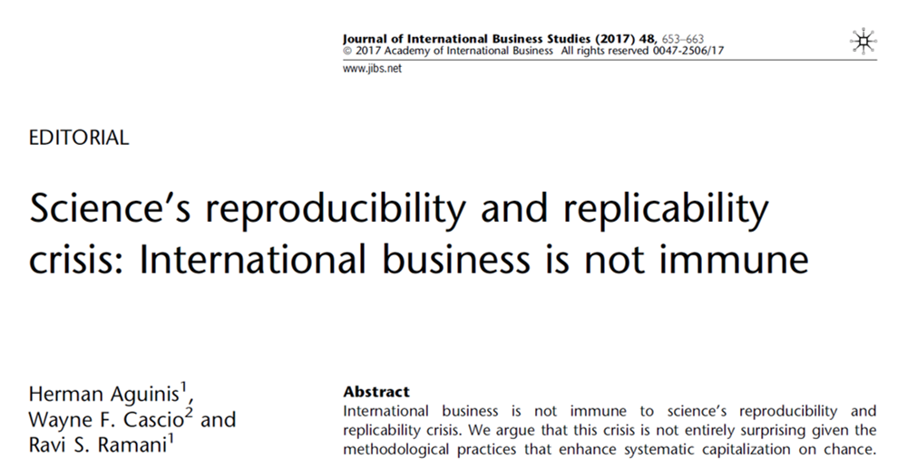
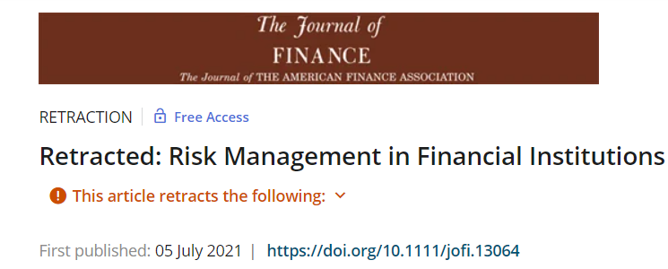

Talk about Research Productivity (Unisinos)

My opinions are my own.
The current state in (business) science
Too many articles…
. . .
… in low-quality journals.
. . .
Scholars are doing their best
- To get “tenure” (not a common concept in Brazil yet)
- To increase reputation
- Highly competitive environment (mental health is a problem)
. . .
Journals are doing their best to increase impact
- Game of metrics
- Highly competitive environment for journals
Too many articles
Brazil 60k scientific articles in 2018: https://data.worldbank.org/indicator/IP.JRN.ARTC.SC?locations=BR
World 2.554K scientific articles in 2018: https://data.worldbank.org/indicator/IP.JRN.ARTC.SC
. . .
Production of academic research is not a problem anymore.

Production of academic research is not a problem anymore. Source.
Production of academic research is not a problem anymore. Source.
Recent problems in academic research
P-Hacking

Article here.
Recent problems in academic research
Publication bias
Article here.
Recent problems in academic research
Replication crisis

Article here.
Recent problems in academic research

Recent problems in academic research

Predatory journals
. . .
Open Science (OS)
” Open science encompasses unhindered access to scientific articles, access to data from public research, and collaborative research enabled by ICT tools and incentives.
Broadening access to scientific publications and data is at the heart of open science, so that research outputs are in the hands of as many as possible, and potential benefits are spread as widely as possible” (OCDE).
\[\\[0.4cm]\]
. . .
É um movimento internacional, já presente em vários campos de pesquisa, com o objetivo de tornar a pesquisa acadêmica mais transparente, acessível e relevante.
\[\\[0.4cm]\]
. . .
Exemplo relativamente recente: Dados de COVID (link).
Open Science (OS)
Dados abertos (Open Data)
Código e Materiais abertos (Open Materials)
Revisão pelos pares aberta (Open peer review)
Artigos-tutoriais
Reuso de Dados
Artigos depositados como preprints podem ser submetidos
Exemplo de política pode ser encontrada (RAC) aqui.
Revisão pelos pares aberta
- Após o artigo ser aceito, revisores são convidados a permitir que sua identificação apareça na versão final do artigo.
. . .
Em paralelo, revisores e autores são convidados a permitir a publicidade do conteúdo dos seus reports e suas cartas de resposta.
- Veja um exemplo aqui
. . .
- A revista não altera o conteúdo dos pareceres em nenhuma situação (erros de digitação, por exemplo, são incluídos)
Tips For Students Ethics
- If you are playing the quantity game, you are playing it wrong.
- Focus on quality, your whole 30-year career is a 10-20 ABS3 papers, not a 200+ papers.
. . .
- Understand the concept of a Job Market Paper (quality paper)
- Doesn’t need to be published by the end of your PhD, but senior enough to nice presentations
- It is also nice for master’s students to have a strong paper in order to get into a PhD program.
Tips For Students Ethics
- Do not send articles to predatory journals
- Those that are in the market can smell it.
- If the project is not good, abandon it (instead of publishing in such journals)
. . .
- Do not cheat
- The industry is getting better at finding wrongdoings.
- At the end of the day, people talk about reputation.